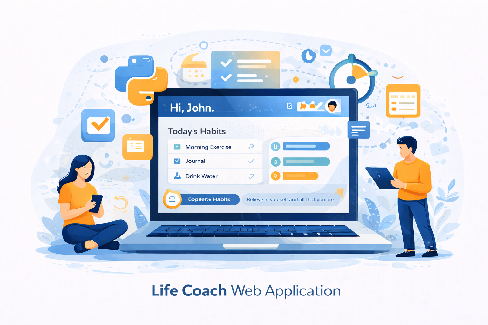
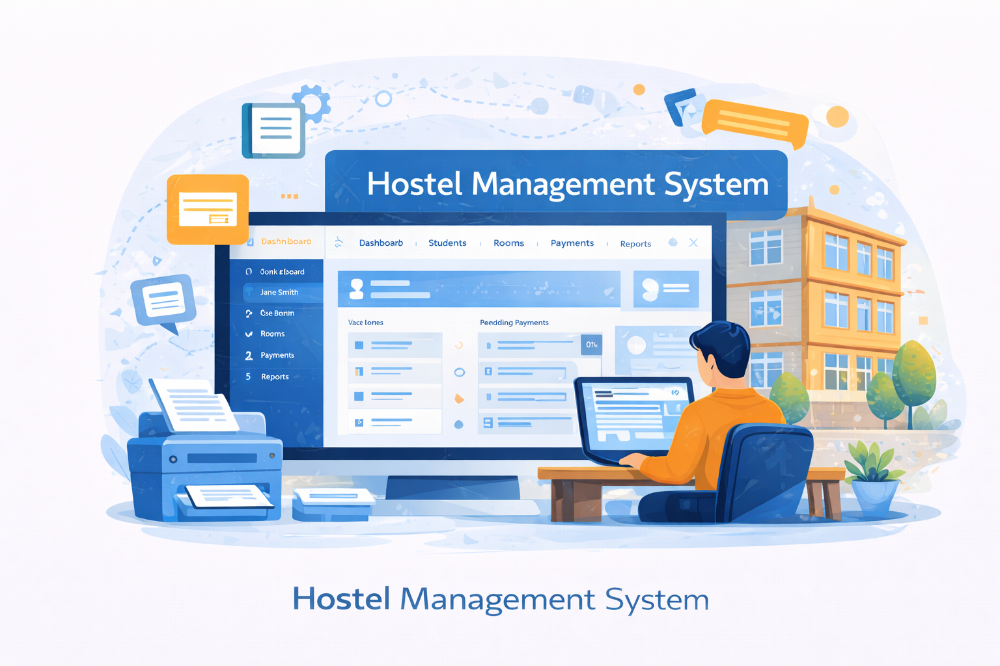
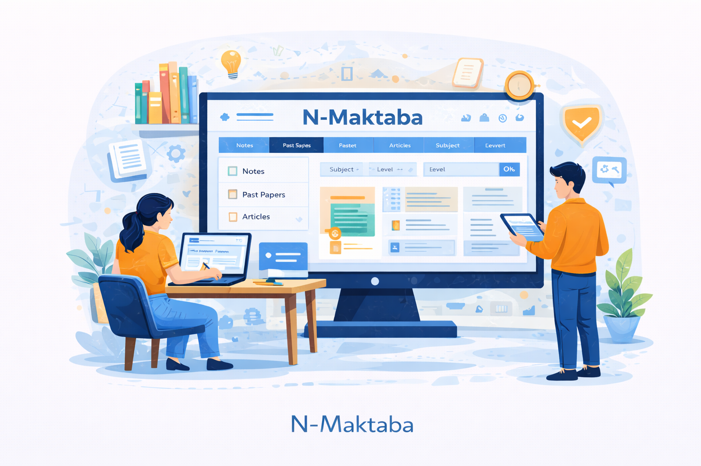
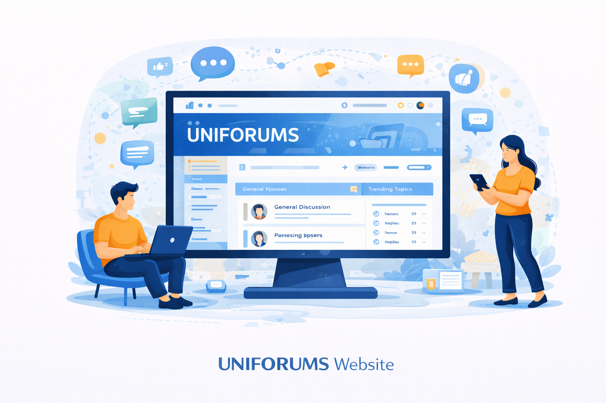

My Skills
I possess a strong combination of technical, design, and problem-solving skills that enable me to develop effective, user-centered, and practical digital solutions. My expertise covers database management, UI/UX design, and the development of both web and desktop applications, with a focus on functionality, efficiency, and visual quality.
Strong knowledge in database design, SQL, normalization, data modeling, and the organization of structured data for efficient system performance.
Ability to design clean, intuitive, and user-friendly interfaces that enhance usability, improve user experience, and create visually appealing digital products.
Experience in developing responsive, functional, and modern websites that address real-world needs while maintaining performance and accessibility.
Desktop Application Development
Ability to design and build practical desktop applications that support business processes, improve efficiency, and solve operational challenges.
System Analysis and Problem Solving
Skilled in understanding user requirements, analyzing system needs, and transforming ideas into well-structured and effective digital solutions.
Programming Languages: Python, Java, JavaScript, HTML, CSS
Frameworks & Libraries: Django, React
Development Tools: Vite, Visual Studio Code, GitHub
Database Tools: MySQL, SQLite, pgAdmin
Design Tools: Figma
Featured Projects
Presented below are some of the key projects that demonstrate my experience in building practical and impactful digital solutions. These projects reflect my ability to manage different aspects of system development, including front-end and back-end implementation, database design, and user interface design, with a strong focus on functionality, usability, and overall system effectiveness.
Life Coach Web Application

A web-based personal development platform created to help users build better habits, monitor progress, and maintain consistency in their daily growth journey.
Technologies Used: React, Vite, Django, Python, PostgreSQL
Key Features: User authentication, habit tracking, journaling, progress monitoring, and dashboard interface
Role: Full-Stack Developer, UI/UX Designer, and Database Designer

A desktop application developed to simplify hostel operations by managing student registration, room allocation, vacancy tracking, and payment records in an efficient and organized way.
Technologies Used: Python, Tkinter, SQLite/MySQL
Key Features: Student registration, room allocation, vacancy tracking, payment management, and hostel record management
Role: Designed and developed the application, including the user interface, system functionality, and database structure.

A digital learning platform developed to provide students with easy access to academic materials and learning resources in a simple and user-friendly environment.
Technologies Used: React, Vite, Django, Python, PostgreSQL
Key Features: Access to learning materials, organized resource management, user-friendly interface, and academic content delivery
Role: Designed and developed the front-end, back-end, and database structure of the platform.

A web-based platform created to give university students the opportunity to exchange ideas, share opinions, and engage in discussions across different fields and areas of interest.
Technologies Used: React, Vite, Django, Python, PostgreSQL
Key Features: Discussion forums, idea sharing, user interaction, topic-based engagement, and community participation
Role: Designed and developed the front-end, back-end, user interface, and database structure of the website.
Experience & Education
My academic background and practical project experience have helped me build a strong foundation in Information Systems Management, software development, database design, and UI/UX design. Through both academic learning and hands-on projects, I have developed the ability to design and build digital solutions that are functional, user-centered, and relevant to real-world needs.
Education
- Bachelor's Degree in Information Systems Management
Currently pursuing my degree with a focus on software development, database systems, system analysis and design, and user-centered digital solutions.
- Core Areas of Study
Database Systems, System Analysis and Design, UI/UX, Web Development, Desktop Application Development, and Information Management.
Experience
- Full-Stack Project Development
Designed and developed web and desktop applications, handling front-end, back-end, database design, and UI/UX implementation.
- Practical Project Experience
Built systems such as Life Coach, Hostel Management System, N-Maktaba, and UNIFORUMS to solve real-world and student-centered challenges.
- Technical Focus
Strong hands-on experience with Python, JavaScript, Django, React, Vite, PostgreSQL, MySQL, SQLite, GitHub, Figma, and desktop application development.